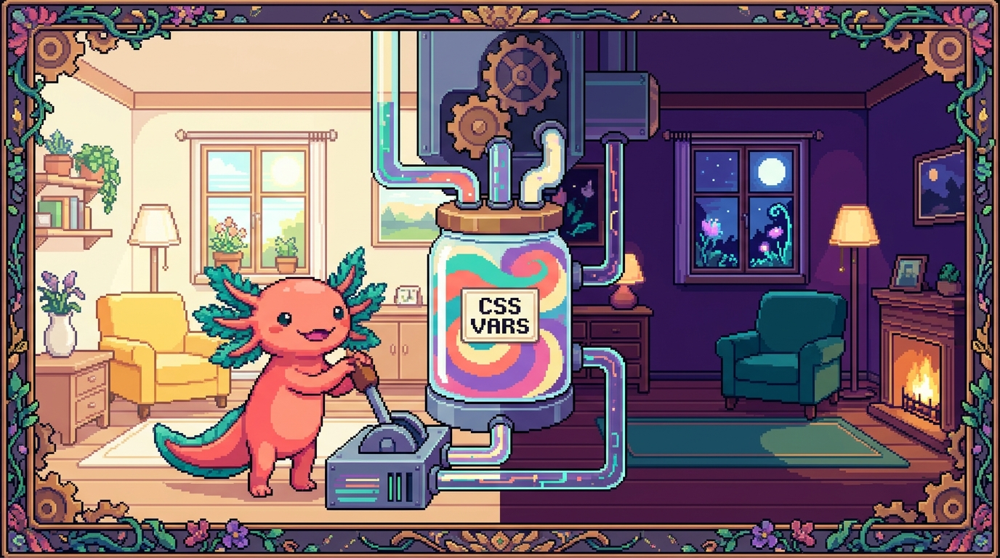

Capítulo 12 — Variables CSS y temas

Hasta ahora has repetido colores y medidas una y otra vez por todo tu CSS. Si el verde de tu marca aparece en treinta sitios y tu jefe (o tú mismo) decide que ahora es azul, te toca cazar treinta lugares. En este capítulo Bit, nuestro ajolote favorito, te muestra cómo guardar un valor en una sola caja con nombre y reutilizarlo en todas partes: las variables CSS. Con ellas vas a construir, paso a paso, un tema claro y un tema oscuro de verdad. Es uno de los superpoderes más satisfactorios del CSS moderno.
1. ¿Qué problema resuelven las variables?
Imagina el styles.css de tunal-digital. En el header pintas el verde de marca. En los botones, el mismo verde. En los enlaces al pasar el ratón, otra vez el verde. Tres lugares, tres veces el código #1f9d55.
El problema no es escribirlo tres veces. El problema es mantenerlo: el día que cambie el verde, tienes que acordarte de todos los rincones donde lo pusiste, y seguro se te escapa alguno. Las variables convierten ese verde en un nombre, lo defines una vez, y donde antes había treinta copias del color ahora hay treinta referencias al mismo nombre. Cambias el nombre en un sitio y todo el sitio web cambia con él.
🟦 ¿Qué significa? — Variable CSS (custom property)
Una variable CSS, también llamada custom property (propiedad personalizada), es un nombre que tú inventas y al que le guardas un valor: un color, un tamaño, una fuente, lo que sea. Su nombre siempre empieza con dos guiones, por ejemplo
--color-marca. Sirve para no repetir valores y para poder cambiarlos en un solo lugar. En un repo real como tunal-digital la usarías para guardar los colores y espaciados de la marca; el propiosite/estilos.cssde este manual las usa para definir sus colores y sus temas.
Bit lo resume así: una variable es como ponerle una etiqueta a un frasco. En vez de decir "el líquido verde del frasco número 47", dices "salsa". Y si un día cambias el contenido del frasco "salsa", todas las recetas que pedían "salsa" usan el nuevo contenido sin que toques las recetas.
2. Declarar una variable: --nombre
Una variable se declara (se crea) escribiendo su nombre con dos guiones al frente y dándole un valor, igual que cualquier propiedad CSS:
:root {
--color-marca: #1f9d55;
--color-texto: #1a1a1a;
--espacio-base: 16px;
--radio-borde: 8px;
}
🟦 ¿Qué significa? — Declarar
Declarar una variable es crearla y darle un valor por primera vez. Lo haces escribiendo
--nombre: valor;dentro de un bloque de reglas. Sirve para que la variable exista y tenga un contenido. En tunal-digital declararías al inicio destyles.csstodas las variables de la paleta antes de empezar a usarlas.
Fíjate en los detalles, porque importan:
- El nombre empieza con
--(dos guiones). Sin eso, no es una variable. - Distingue mayúsculas de minúsculas:
--Colory--colorson dos variables distintas. - Puedes usar guiones para separar palabras:
--color-marca,--espacio-base. Es la costumbre más común.
💡 Tip
Ponles nombres que digan para qué sirven, no qué color son.
--color-marcaes mejor que--verde, porque si mañana la marca cambia a azul, el nombre--color-marcasigue teniendo sentido y--verde: bluequedaría ridículo.
3. :root: el lugar donde viven las variables globales
¿Qué es ese :root donde declaramos las variables arriba? Es el sitio habitual para las variables que quieres usar en toda la página.
🟦 ¿Qué significa? —
:root
:rootes un selector especial que apunta al elemento más alto del documento: la etiqueta<html>. Sirve para declarar variables que quieres que estén disponibles en toda la página. Se usa al principio del CSS para definir la paleta y las medidas globales. En elsite/estilos.cssde este manual, los colores del tema viven dentro de:root.
Técnicamente :root es lo mismo que el selector html, pero tiene un pelín más de prioridad y, sobre todo, es la convención: cuando alguien lee tu CSS y ve :root, entiende al instante "aquí están las variables globales del proyecto". Por eso casi todo el mundo lo usa para esto.
🔎 En tu código
Abre el
styles.cssde tunal-digital. Si todavía no tiene un bloque:root, ese es tu primer ejercicio del capítulo: crea uno y mete ahí los colores que más repites. Verás que el archivo empieza a leerse como una receta con su lista de ingredientes arriba.
4. Usar una variable: var()
Declarar la variable no pinta nada por sí solo. Para usar su valor llamas a la función var() con el nombre de la variable dentro:
:root {
--color-marca: #1f9d55;
--color-texto: #1a1a1a;
--espacio-base: 16px;
}
body {
color: var(--color-texto);
}
.boton {
background-color: var(--color-marca);
padding: var(--espacio-base);
}
.enlace:hover {
color: var(--color-marca);
}
🟦 ¿Qué significa? —
var()
var()es la función que lee el valor guardado en una variable y lo coloca donde la escribes. Le pasas el nombre de la variable entre paréntesis:var(--color-marca). Sirve para reutilizar el valor sin repetirlo. En tunal-digital, cada botón, enlace y borde que use la marca llamará avar(--color-marca)en lugar de copiar el código de color.
Ahora viene lo bonito. Si mañana el verde cambia a otro tono, editas una sola línea:
:root {
--color-marca: #0d6efd; /* antes era verde, ahora es azul */
}
…y el header, los botones, los enlaces y todo lo que use var(--color-marca) cambian solos. Eso es lo que Bit llama "tocar un interruptor y que se encienda toda la casa".
⚠️ Cuidado
No confundas declarar con usar. Declarar lleva dos guiones y dos puntos:
--color-marca: green;. Usar llevavar():color: var(--color-marca);. Si escribescolor: --color-marca;(sinvar()), no funciona y no salta ningún error rojo: simplemente el color no se aplica. Es uno de los despistes más comunes al empezar.
5. Valor de respaldo: el segundo argumento de var()
¿Y qué pasa si llamas a una variable que no existe o que se te olvidó declarar? Por defecto, esa propiedad no recibe ningún valor y se queda como estaba. Para protegerte, var() acepta un valor de respaldo:
.tarjeta {
/* Si --color-borde no existe, usa #ddd */
border: 1px solid var(--color-borde, #ddd);
}
🟦 ¿Qué significa? — Valor de respaldo (fallback)
El valor de respaldo es un segundo valor que pones dentro de
var(), separado por una coma, y que se usa solo si la variable no está definida. Sirve de red de seguridad para que tu estilo nunca quede roto si falta una variable. Se usa cuando no estás seguro de que la variable exista, por ejemplo en componentes reutilizables o cuando un compañero podría no haber declarado todas las variables.
Lo lees así: "usa --color-borde; y si no existe, usa #ddd". El respaldo incluso puede ser otra variable:
.tarjeta {
border: 1px solid var(--color-borde, var(--color-marca, #ddd));
}
Eso encadena respaldos: intenta --color-borde; si no, --color-marca; y si tampoco, el gris #ddd. Bit te avisa de que tres niveles ya son bastantes; más que eso y nadie entiende qué color saldrá.
💡 Tip
El respaldo es perfecto para componentes que quieres compartir entre proyectos. Si copias una tarjeta de tunal-digital a otro sitio que no tiene las mismas variables, el fallback evita que la tarjeta se vea rota mientras configuras los colores nuevos.
6. Alcance: ¿hasta dónde llega una variable?
Las variables CSS se heredan. Esto suena técnico pero es muy intuitivo: una variable declarada en un elemento está disponible en ese elemento y en todo lo que tenga dentro (sus hijos, nietos, etc.). Por eso :root (que es el ancestro de todo) las reparte a toda la página.
🟦 ¿Qué significa? — Alcance (scope)
El alcance de una variable es la zona del documento donde se puede usar. Si la declaras en
:root, su alcance es toda la página. Si la declaras dentro de.tarjeta, su alcance es solo esa tarjeta y lo que esté dentro de ella. Sirve para tener valores diferentes en diferentes partes sin que se pisen. Se usa, por ejemplo, para que una sección "destacada" de tunal-digital tenga su propia variante de color sin afectar al resto.
Mira este ejemplo: una misma variable con valores distintos según dónde la declares.
:root {
--fondo: white; /* por defecto, todo es blanco */
}
.seccion-oscura {
--fondo: #111; /* aquí dentro, --fondo vale negro */
}
.caja {
background-color: var(--fondo);
}
Una .caja que esté suelta en la página será blanca. La misma .caja colocada dentro de .seccion-oscura será negra, porque ahí dentro --fondo tiene otro valor. No tocaste la regla de .caja: solo cambió el ambiente que la rodea. A esto se le llama redefinir la variable en un alcance más pequeño, y es la base de los temas que haremos enseguida.
⚠️ Cuidado
Una variable declarada dentro de
.tarjetano existe fuera de.tarjeta. Si intentas usarla en otro lado, recibirás su valor de respaldo (si lo pusiste) o nada. Es decir, las variables bajan a los hijos pero no suben a los padres ni saltan a los hermanos.
7. Cambiar variables con JavaScript
Aquí es donde las variables CSS se vuelven mágicas. Como son propiedades del documento, JavaScript puede cambiarlas en vivo, y todo lo que las usa se actualiza al instante sin recargar la página.
Esto es justo lo que necesita el main.js de tunal-digital para, por ejemplo, un botón que cambie el tema.
// Cambiar una variable global (la de :root) desde JS
document.documentElement.style.setProperty("--color-marca", "#0d6efd");
🟦 ¿Qué significa? —
setProperty
setPropertyes una función de JavaScript que asigna un valor a una propiedad CSS de un elemento, incluidas las variables. La usas comoelemento.style.setProperty("--nombre", "valor"). Sirve para cambiar estilos desde el código en tiempo real. En elmain.jsde tunal-digital la usarías para que un clic cambie un color o el tamaño de la fuente.
Desglosemos esa línea, porque tiene tres piezas:
🟦 ¿Qué significa? —
document.documentElement
document.documentElementes la forma en que JavaScript se refiere a la etiqueta<html>, que es el mismo elemento al que apunta:rooten CSS. Sirve para leer o cambiar las variables globales desde el código. Se usa cuando quieres que un cambio de JS afecte a toda la página, no solo a un trozo.
Entonces document.documentElement.style.setProperty("--color-marca", "#0d6efd") se lee así: "en el <html>, pon la variable --color-marca en azul". Como esa variable la usa todo el sitio vía var(), todo el sitio se pone azul de golpe.
También puedes leer el valor actual de una variable:
const estilos = getComputedStyle(document.documentElement);
const verde = estilos.getPropertyValue("--color-marca").trim();
console.log(verde); // "#1f9d55"
🟦 ¿Qué significa? —
getComputedStyle
getComputedStylees una función de JavaScript que devuelve todos los estilos finales que el navegador ha calculado para un elemento, ya resueltos. Le pasas el elemento entre paréntesis:getComputedStyle(document.documentElement). Sirve para leer valores (incluidas las variables CSS) tal y como están aplicados en ese momento. En elmain.jsde tunal-digital la usarías para averiguar qué color de marca está activo antes de decidir si lo cambias.🟦 ¿Qué significa? —
getPropertyValue
getPropertyValuees la función que, sobre los estilos que te diogetComputedStyle, extrae el valor de una propiedad concreta por su nombre. La usas comoestilos.getPropertyValue("--color-marca")y te devuelve el valor guardado en esa variable. Sirve para leer una variable desde JavaScript. En tunal-digital la combinarías congetComputedStylepara consultar el valor actual de cualquier variable de tu paleta.
El .trim() quita los espacios sobrantes que a veces vienen con el valor. Bit recomienda acostumbrarse a ponerlo siempre que leas variables, para no llevarte sorpresas con un espacio invisible.
🔎 En tu código
En RachaSimple (React + TS + Tailwind), normalmente no escribes
setPropertya mano para los temas: Tailwind y su clasedarkse encargan. Pero entender este mecanismo te ayuda a saber qué hace Tailwind por debajo. En tunal-digital, que es JS vanilla, sí escribiríassetPropertytú mismo enmain.js. Misma idea, distinto nivel de ayuda.
8. Tu primer tema: claro y oscuro a mano
Ya tienes todas las piezas para construir un tema. La idea central es: no cambies cien propiedades; cambia las variables. Defines tus colores como variables, y el "tema oscuro" no es más que el mismo conjunto de variables con otros valores.
🟦 ¿Qué significa? — Tema (theme)
Un tema es un conjunto coordinado de colores (y a veces fuentes o sombras) que le dan un aspecto unificado a la interfaz. Lo típico es tener un tema claro (fondo claro, texto oscuro) y uno oscuro (fondo oscuro, texto claro). Sirve para que la app se vea bien y sea cómoda en distintos ambientes. RachaSimple y el
site/estilos.cssde este manual tienen temas claro y oscuro.
Primero, las variables del tema claro en :root:
:root {
--fondo: #ffffff;
--texto: #1a1a1a;
--color-marca: #1f9d55;
--borde: #e2e2e2;
}
body {
background-color: var(--fondo);
color: var(--texto);
}
Fíjate en que body no menciona ningún color directo: solo usa variables. Esa disciplina es lo que hace que cambiar de tema sea trivial.
Ahora el tema oscuro. La forma más sencilla de activarlo a mano es ponerle una clase al <html> o al <body> (por ejemplo tema-oscuro) y redefinir las variables dentro de esa clase:
.tema-oscuro {
--fondo: #121212;
--texto: #f0f0f0;
--color-marca: #34d27b;
--borde: #2a2a2a;
}
Y un botón en main.js que ponga o quite esa clase:
const boton = document.querySelector("#cambiar-tema");
boton.addEventListener("click", () => {
document.documentElement.classList.toggle("tema-oscuro");
});
🟦 ¿Qué significa? —
classList.toggle
classList.togglees una función de JavaScript que añade una clase a un elemento si no la tiene, y la quita si ya la tenía. La usas comoelemento.classList.toggle("nombre-clase"). Sirve para encender y apagar algo con el mismo botón. En tunal-digital la usarías para alternar entre tema claro y oscuro con un solo clic.
¿Ves la elegancia? El botón solo pone o quita una clase. Esa clase redefine cuatro variables. Esas cuatro variables las usan decenas de elementos vía var(). Un clic, toda la página cambia de piel. Bit aplaude con sus manitas de ajolote.
💡 Tip
Pon todas las variables del tema en un mismo bloque y mantén el mismo conjunto de nombres en el claro y en el oscuro. Si en
:roottienes--fondoy--texto, en.tema-oscurodeben aparecer exactamente esos mismos nombres con otros valores. Así nunca se te queda un color "a medias".
9. prefers-color-scheme: respetar lo que el usuario ya eligió
Hay un detalle precioso: muchos usuarios ya tienen su teléfono o su computadora configurados en modo oscuro. Sería ideal que tu sitio respetara esa preferencia sin que tengan que tocar nada. Para eso existe prefers-color-scheme.
🟦 ¿Qué significa? —
prefers-color-scheme
prefers-color-schemees una media query (consulta de medios) que pregunta si el sistema del usuario está en modo claro u oscuro. Sirve para mostrar automáticamente el tema que la persona ya prefiere. Se usa dentro de@media (prefers-color-scheme: dark) { ... }y es justo el mecanismo que elsite/estilos.cssde este manual usa para su tema oscuro automático.🟦 ¿Qué significa? — Media query
Una media query es una regla CSS que aplica estilos solo cuando se cumple una condición, como el ancho de la pantalla o, aquí, la preferencia de color. Se escribe
@media (condición) { reglas }. Sirve para adaptar el diseño a distintas situaciones. La verás mucho más en el capítulo de diseño responsivo; aquí la usamos solo para detectar el modo oscuro.
Así se ve un tema oscuro automático:
:root {
--fondo: #ffffff;
--texto: #1a1a1a;
--color-marca: #1f9d55;
}
@media (prefers-color-scheme: dark) {
:root {
--fondo: #121212;
--texto: #f0f0f0;
--color-marca: #34d27b;
}
}
body {
background-color: var(--fondo);
color: var(--texto);
}
Con esto, una persona con el móvil en modo oscuro abre tu sitio y lo ve oscuro sin pulsar nada. Una persona en modo claro lo ve claro. Tú no escribiste ningún JavaScript: el navegador hace el trabajo leyendo la preferencia del sistema.
⚠️ Cuidado
prefers-color-schemelee la preferencia del sistema operativo, no de tu sitio. No puedes cambiarla desde CSS ni "forzarla" desde tu página; solo puedes reaccionar a ella. Si quieres un botón que el usuario controle dentro de tu sitio, eso es el método de la clase con JavaScript de la sección anterior.
10. Lo mejor de los dos mundos: automático + botón
En la práctica, los sitios serios combinan ambas cosas: empiezan respetando el sistema con prefers-color-scheme, y además ofrecen un botón por si el usuario quiere lo contrario en ese sitio concreto. La estrategia típica:
- Por defecto, el CSS sigue la preferencia del sistema (
prefers-color-scheme). - Un botón en JS añade una clase como
tema-oscurootema-claroal<html>para forzar uno u otro. - La clase "gana" porque la pusiste tú a propósito, así que sobrescribe lo automático.
:root {
--fondo: #ffffff;
--texto: #1a1a1a;
}
/* Automático según el sistema */
@media (prefers-color-scheme: dark) {
:root {
--fondo: #121212;
--texto: #f0f0f0;
}
}
/* Forzado por el usuario, gana sobre lo automático */
.tema-oscuro {
--fondo: #121212;
--texto: #f0f0f0;
}
.tema-claro {
--fondo: #ffffff;
--texto: #1a1a1a;
}
🔎 En tu código
En RachaSimple y Faro/Organizer (ambos con Tailwind), Tailwind ya trae el "modo oscuro" listo: pones la clase
darken el<html>y usas utilidades comodark:bg-gray-900. Por debajo, eso hace exactamente lo que viste aquí: detecta o fuerza un tema y reasigna colores. En tunal-digital, sin framework, tú escribes a mano las variables, la media query y elclassList.toggle. Saber el mecanismo "crudo" te hace entender mucho mejor lo que Tailwind te regala hecho.💡 Tip
Si quieres que la elección del usuario se recuerde entre visitas, en tunal-digital guardarías la preferencia en
localStoragedesdemain.jsy, al cargar la página, leerías ese valor para volver a poner la clase. No te preocupes si aún no sabes qué eslocalStorage: por ahora basta con que sepas que el botón cambia una clase y la clase cambia las variables.
11. Variables más allá del color
Aunque los temas son el uso estrella, las variables sirven para cualquier valor que repitas. Una pequeña "escala" de espaciado y de tamaños mantiene todo el sitio coherente:
:root {
--espacio-1: 4px;
--espacio-2: 8px;
--espacio-3: 16px;
--espacio-4: 32px;
--radio: 8px;
--fuente-base: system-ui, sans-serif;
}
.tarjeta {
padding: var(--espacio-3);
border-radius: var(--radio);
font-family: var(--fuente-base);
margin-bottom: var(--espacio-4);
}
Cuando todos tus márgenes y rellenos salen de una escala de variables, tu diseño se ve ordenado casi sin esfuerzo, porque los espacios siempre son "uno de los de la lista" en lugar de números inventados al azar. Esta idea de tener una escala fija es, por cierto, justo lo que hace Tailwind en RachaSimple y Faro: te da una escala de espaciados predefinida para que no inventes valores raros.
💡 Tip
Empieza con pocas variables. No conviertas en variable cada número del CSS desde el primer día; eso satura. Convierte en variable lo que se repite y lo que querrías cambiar de golpe: colores de marca, espaciados base, radios de borde, la fuente. El resto puede esperar.
✅ Checklist — ¿ya domino esto?
- [ ] Sé declarar una variable con
--nombre: valor;dentro de un bloque. - [ ] Sé que
:rootes el lugar para las variables globales de toda la página. - [ ] Uso una variable con
var(--nombre)y entiendo que sinvar()no funciona. - [ ] Sé poner un valor de respaldo:
var(--nombre, valorPorDefecto). - [ ] Entiendo el alcance: una variable vive en el elemento donde la declaro y en sus hijos.
- [ ] Puedo redefinir una variable dentro de una clase para crear una variante.
- [ ] Sé cambiar una variable global desde JS con
document.documentElement.style.setProperty. - [ ] Sé alternar un tema con
classList.toggle("tema-oscuro"). - [ ] Sé crear un tema oscuro automático con
@media (prefers-color-scheme: dark). - [ ] Entiendo que Tailwind (en RachaSimple y Faro) hace todo esto por debajo con la clase
dark.
🧪 Ejercicios
-
Tu paleta en
:root. 💻 Abre elstyles.cssde tunal-digital y crea un bloque:rootcon al menos cuatro variables:--color-marca,--texto,--fondoy--borde. Después busca en el archivo los colores que repetías "a mano" y reemplázalos porvar(...). Recarga y comprueba que el sitio se ve igual que antes. -
El interruptor mágico. 💻 En ese mismo
:root, cambia solo el valor de--color-marcapor otro color muy distinto (por ejemplo de verde a morado). Recarga y observa cuántos elementos cambiaron de una sola línea. Anota cuáles para confirmar que las variables están bien conectadas. -
Respaldo a prueba de fallos. Crea una regla
.avisoconborder: 2px solid var(--color-aviso, orange);sin declarar--color-avisoen ningún lado. Comprueba que el borde sale naranja. Luego declara--color-aviso: red;en:rooty verifica que ahora sale rojo. Acabas de ver el fallback en acción. -
Alcance local. Crea una clase
.destacadoque redefina--fondoy--textocon colores llamativos, y dentro de un elemento con esa clase coloca una.tarjetaque usevar(--fondo)yvar(--texto). Comprueba que la tarjeta cambia solo cuando está dentro de.destacado, y no fuera. -
Tema oscuro con botón. 💻 En tunal-digital, define una clase
.tema-oscuroque redefina tus variables de color, añade un botón en el HTML y, enmain.js, usaclassList.toggle("tema-oscuro")sobredocument.documentElemental hacer clic. Verifica que el sitio entero cambia de piel con cada pulsación. -
Tema oscuro automático. 💻 Añade al
styles.cssun bloque@media (prefers-color-scheme: dark) { :root { ... } }que redefina las mismas variables. Cambia el modo claro/oscuro de tu sistema operativo y comprueba que el sitio responde solo, sin tocar el botón. Si combinas esto con el ejercicio 5, fíjate en cómo conviven lo automático y lo forzado.